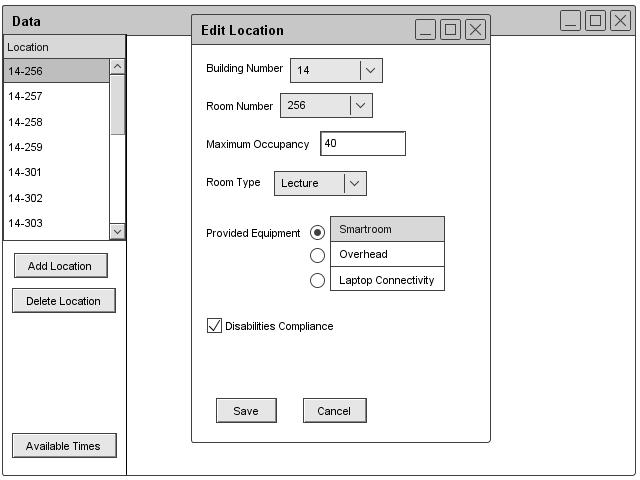

Section 2.3.3.2: Editing Location Information
The administrator can edit a room by clicking the Edit button under the room section of the Schedule header. The database window displays with a list of rooms. The administrator can select a room to edit. After selecting a room, a form appears similar to the one for adding a room. However this form has the previous information filled in. The administrator is free to edit the information. Once done editing, the administrator clicks save and the changes are made to the database. Figure 34 shows the dialogue for editing.

Figure 34: Edit Location Dialog
prev: add-room |
next: room-remove |
up: data-room |
index: index